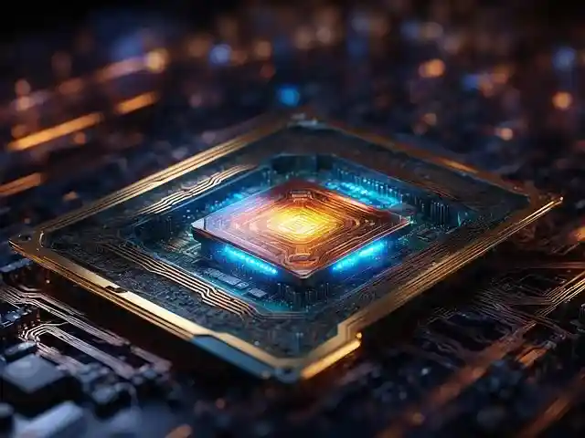

Twój komputer znowu będzie jak nowy.
Ekspresowa naprawa laptopów i komputerów w Częstochowie, Kłobucku i okolicach. Nie tracisz czasu – my zajmiemy się resztą!
100%
Zadowolenia
24h
Czas diagnozy
12m
Gwarancji

Masz jeden z tych problemów?
Nie martw się, naprawialiśmy to już tysiące razy.
Wolne działanie
System ładuje się wieczność? Przyspieszamy komputery i laptopy poprzez optymalizację i montaż szybkich dysków SSD.
Nie włącza się
Brak reakcji na przycisk? Naprawiamy układy zasilania, płyty główne i wymieniamy uszkodzone podzespoły.
Zbita matryca
Ekran jest pęknięty lub ma paski? Wymieniamy matryce w laptopach wszystkich marek od ręki.
Wirusy i błędy
Dziwne komunikaty? Usuwamy złośliwe oprogramowanie i przywracamy stabilność systemu Windows.
Dlaczego warto nam zaufać?
Jesteśmy liderem serwisu IT w regionie Częstochowy i Kłobucka. Nasze podejście to przejrzystość, szybkość i uczciwość.
-
Darmowa Diagnoza
Sprawdzamy usterkę za darmo przed podjęciem jakichkolwiek działań.
-
Dojazd do Klienta
Nie musisz dźwigać komputera. Przyjedziemy do Ciebie w Kłobucku lub Częstochowie.
-
Gwarancja na każdą naprawę
Na każdą wykonaną usługę otrzymasz pisemną gwarancję.
Co mówią klienci?
"Szybko, tanio i profesjonalnie. Mój laptop zyskał drugie życie po wymianie dysku na SSD. Polecam każdego informatyka z tej firmy!"
- Marek z Kłobucka
"Naprawa gniazda zasilania wykonana w jeden dzień. Bardzo miły kontakt. Najlepszy serwis komputerowy w Częstochowie."
- Anna z Częstochowy
Jak wygląda naprawa?
Prosty proces w 4 krokach
Zgłoszenie
Dzwonisz lub piszesz do nas. Opisujesz co się dzieje z Twoim sprzętem.
Bezpłatna wycena
Odbieramy sprzęt lub przyjeżdżamy na miejsce. Diagnozujemy i podajemy koszt.
Szybka naprawa
Po Twojej akceptacji ruszamy do pracy. Większość napraw wykonujemy w 24-48h.
Odbiór i radość
Sprawdzasz sprzęt, otrzymujesz gwarancję i cieszysz się działającym komputerem.
Gdzie dojeżdżamy?
Obsługujemy całą Częstochowę, powiat kłobucki i okolice.
Często zadawane pytania
Ile kosztuje diagnoza?
U nas diagnoza jest zawsze 0 zł, pod warunkiem wykonania naprawy. Jeśli zrezygnujesz, zapłacisz jedynie niewielką opłatę za czas poświęcony na sprawdzenie sprzętu.
Czy naprawiacie u klienta?
Tak! Wiele usterek (jak konfiguracja routera, instalacja systemu czy usuwanie wirusów) wykonujemy bezpośrednio u Ciebie w domu lub biurze.
Jak długo trwa naprawa?
Standardowe usterki naprawiamy w ciągu 1-2 dni roboczych. W przypadku konieczności sprowadzenia części, czas może się wydłużyć, o czym zawsze informujemy.
Czy dane są bezpieczne?
Bezpieczeństwo Twoich danych jest naszym priorytetem. Zawsze zalecamy kopię zapasową, ale dbamy o to, by pliki pozostały nienaruszone podczas serwisu.
Masz pytanie? Napisz do nas!
Odpowiadamy zazwyczaj w ciągu 30 minut.
+48 786 587 930
kontakt.mstechpc@gmail.com
Pon - Pt: 9:00 - 18:00